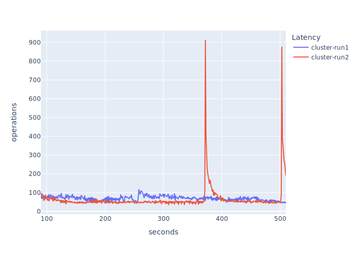
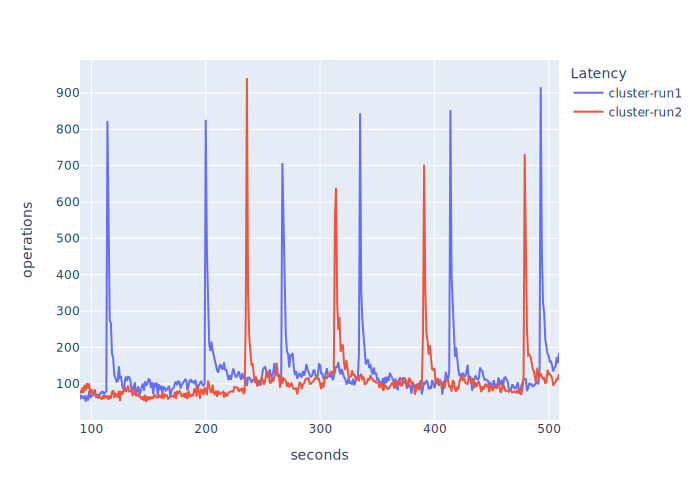

Figure 1. Topology
Latency.
Figure 1. Topology
Latency.cluster placement grouptcSee the test configuration for more details.
Latency between VMs is introduced via tc.
# on each member VM -- not the client
$ tc qdisc add dev ens5 root netem delay 2msThe above results in pairwise latency of 4ms between members, 2ms either side of the link, member-member latency. There’s a latency of 2ms between the client and each respective member as a side effect, client-member latency.
$ cat /etc/os-release
NAME="Ubuntu"
VERSION="20.04.3 LTS (Focal Fossa)"
ID=ubuntu
ID_LIKE=debian
PRETTY_NAME="Ubuntu 20.04.3 LTS"
VERSION_ID="20.04"
HOME_URL="https://www.ubuntu.com/"
SUPPORT_URL="https://help.ubuntu.com/"
BUG_REPORT_URL="https://bugs.launchpad.net/ubuntu/"
PRIVACY_POLICY_URL="https://www.ubuntu.com/legal/terms-and-policies/privacy-policy"
VERSION_CODENAME=focal
UBUNTU_CODENAME=focal
$ cat /proc/version
Linux version 5.11.0-1022-aws (buildd@lgw01-amd64-036) (gcc (Ubuntu 9.3.0-17ubuntu1~20.04) 9.3.0, GNU ld (GNU Binutils for Ubuntu) 2.34) #23~20.04.1-Ubuntu SMP Mon Nov 15 14:03:19 UTC 2021
$ java -version
openjdk version "21" 2023-09-19
OpenJDK Runtime Environment (build 21+35-2513)
OpenJDK 64-Bit Server VM (build 21+35-2513, mixed mode, sharing)VM instances: c5.4xlarge.
Figure 1. Topology
Latency.
tc Latency |
Member-Member Latency | Client-Member Latency | Topology (Figure 1) | Graph Label (Figure 2) |
|---|---|---|---|---|
| n/a | ~55us | ~55us | n/a | cluster |
| 1ms | 2ms | 1ms | (a) | tc-1ms |
| 2ms | 4ms | 2ms | (b) | tc-2ms |
| 3ms | 6ms | 3ms | (c) | tc-3ms |
| 4ms | 8ms | 4ms | (d) | tc-4ms |
Note that the latencies are approximations. The latency is very low
in cluster placement group so tc added the
millis as stated; in practice the latency is normally just over. lagscope was used to
derive the latency for a stock cluster placement of all
VMs:
$ lagscope -s10.0.77.127 -Pout.json
lagscope 1.0.1
---------------------------------------------------------
13:16:51 INFO: New connection: local:25001 [socket:3] --> 10.0.77.127:6001
13:17:46 INFO: TEST COMPLETED.
13:17:46 INFO: Ping statistics for 10.0.77.127:
13:17:46 INFO: Number of successful Pings: 1000000
13:17:46 INFO: Minimum = 42.000us, Maximum = 359.750us, Average = 54.593us
13:17:46 INFO: Dumping latency frequency table into json file: out.json
Percentile Latency(us)
50% 53
75% 56
90% 61
95% 65
99% 81
99.9% 145
99.99% 186
99.999% 233Test configuration is here.
 Figure 2. Throughputs
with 90 second warmup and cooldown normalisation.
Figure 2. Throughputs
with 90 second warmup and cooldown normalisation.
| Network Latency | Min Ops/s | Max Ops/s | Mean Ops/s | StdDev |
|---|---|---|---|---|
| cluster | 2512.00 | 3069.00 | 2881.29 | 90.13 |
| tc-1ms | 179.00 | 286.00 | 223.96 | 14.28 |
| tc-2ms | 162.00 | 230.00 | 189.27 | 13.45 |
| tc-3ms | 90.91 | 160.00 | 140.07 | 11.83 |
| tc-4ms | 0.00 | 56.00 | 4.52 | 9.63 |
Test configuration is here.
Running with introduced latency of 2ms per-member and beyond resulted in crashes. Therefore, I’ve presented only two runs here so we must make a comparison based on only those data points. Also, I ran this test twice to confirm the large op/s spike was not a one-off – it wasn’t and it’s reproducible seemingly each test run.
 Figure 3. Throughputs
with 90 second warmup and cooldown normalisation.
Figure 3. Throughputs
with 90 second warmup and cooldown normalisation.
| Network Latency | Min Ops/s | Max Ops/s | Mean Ops/s | StdDev |
|---|---|---|---|---|
| cluster | 35.96 | 644.00 | 58.93 | 45.03 |
| tc-1ms | 0.00 | 12.00 | 2.21 | 2.01 |
Test configuration is here.
 Figure 4. Throughputs with 90 second warmup and cooldown normalisation.
I ran this twice because I expected the same peaking as 5.3.1. The first run,
cluster-run1, exhibited a stabler op/s with smaller variability; however, a second run to confirm this,cluster-run2, showed the same peaking as 5.3.1.
| Network Latency | Min Ops/s | Max Ops/s | Mean Ops/s | StdDev |
|---|---|---|---|---|
| cluster-run1 | 40.96 | 118.00 | 69.28 | 12.59 |
| cluster-run2 | 34.00 | 914.09 | 65.28 | 71.10 |
Test configuration is here.
Ran twice as the peaking in 5.3.0 didn’t manifest in the first run.
 Figure 5. Throughputs with 90 second warmup and cooldown normalisation.
| Network Latency | Min Ops/s | Max Ops/s | Mean Ops/s | StdDev |
|---|---|---|---|---|
| cluster-run1 | 51.00 | 916.00 | 133.03 | 100.66 |
| cluster-run2 | 49.95 | 941.00 | 108.75 | 80.20 |
cluster network profile and ~101x in
tc-1ms network profile.